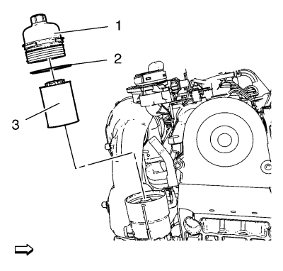
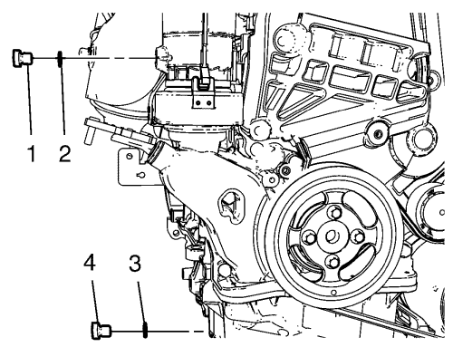

Sustitución del aceite de motor y filtro de aceite.
Procedimiento de desmontaje
- Desmonte la cubierta del motor. Consultar Sustitución de la cubierta del motor .
- Extraiga el conjunto del filtro de aire. Consultar Sustitución del filtro de aire .

Nota: Compruebe el intervalo de mantenimiento del aceite del motor y sustituya el filtro del aceite del motor en función del intervalo. También puede comprobar con la herramienta de diagnóstico la vida útil que le queda al motor.
- Retire el tapón (1) del filtro de aceite.
- Quite la junta (2) del tapón del filtro de aceite
- Retire y deseche convenientemente la pieza de suplemento (3) del filtro de aceite.
- Suba el vehículo a la altura máxima. Consultar Elevación y soporte en alto del vehículo .
- Desmonte el aislante del compartimento delantero. Consultar Sustitución del aislamiento del compartimento delantero .
- Vacíe el aceite de motor en el recipiente.

- Desmonte el tornillo (4) de vaciado del cárter de aceite junto con la junta (3) de dicho tornillo.
- Desmonte el tornillo de vaciado de aceite de la carcasa del filtro de aceite (1) con la junta de drenaje de la carcasa del filtro de aceite (2) y vacíe el aceite del motor en la carcasa del filtro de aceite.
Procedimiento de montaje
- Limpie la rosca del tornillo de vaciado del cárter de aceite y la rosca del cárter de aceite.
- Limpie la rosca del tornillo de vaciado de la carcasa del filtro de aceite y la rosca de la carcasa del filtro de aceite.
- Monte una junta del tornillo de vaciado del cárter de aceite (3).
Precaución:Consulte Precaución con las fijaciones en la sección Prólogo.
- Monte el tornillo de vaciado del aceite (4) y apriételo a 35 N·m (26 lib. pie).
- Monte una junta nueva (3) en el tornillo de vaciado del aceite de la carcasa del filtro de aceite.
- Monte el tornillo de drenaje de aceite de la carcasa del filtro de aceite (1) y apriételo a 10 N·m (89 lib. pulg.).
- Monte el aislante del compartimento delantero. Consultar Sustitución del aislamiento del compartimento delantero .
- Baje el vehículo a la altura máxima.
- Monte el suplemento nuevo del filtro de aceite (3).
- Monte una junta nueva del filtro de aceite (2)
- Monte la tapa del filtro de aceite (1) y apriétela a 25 N·m (19 lib. pie).
Nota: Utilice el tipo de aceite del motor especificado con la clase de viscosidad indicada. Consultar Adhesivos, líquidos, lubricantes y selladores .
- Eche aceite de motor nuevo.
- Arranque el motor y déjelo en marcha hasta que se apague el indicador de control de presión de aceite.
- Compruebe el nivel de aceite con el indicador de nivel de aceite.
- Después de cambiar el aceite del motor, reinicie el programa del ECM con la herramienta de diagnóstico.
| © Copyright Chevrolet. All rights reserved |